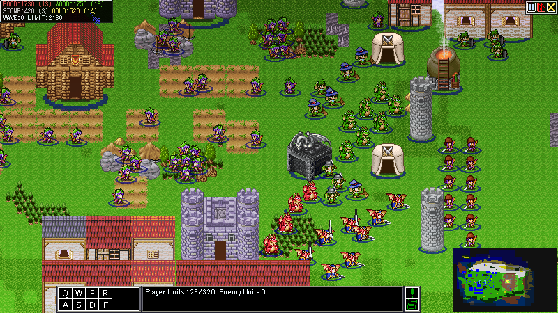
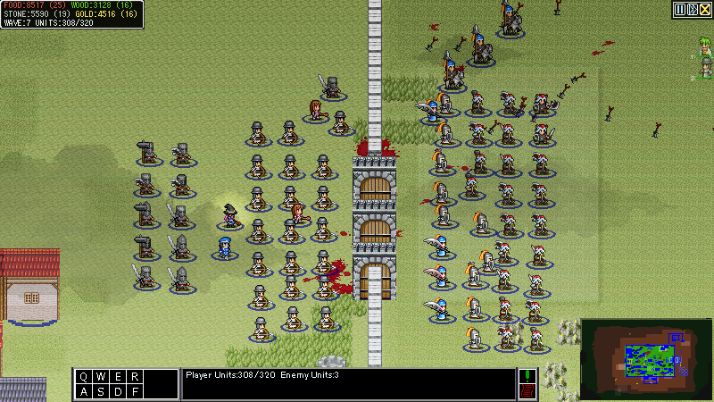
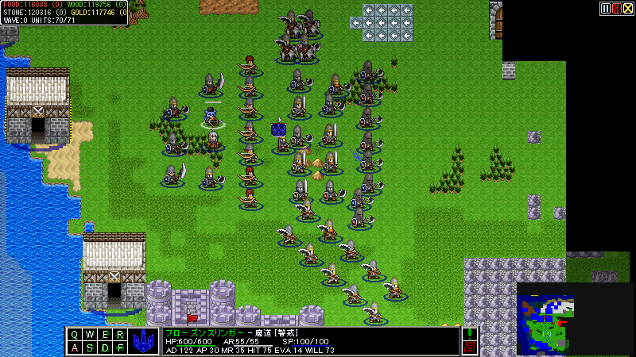
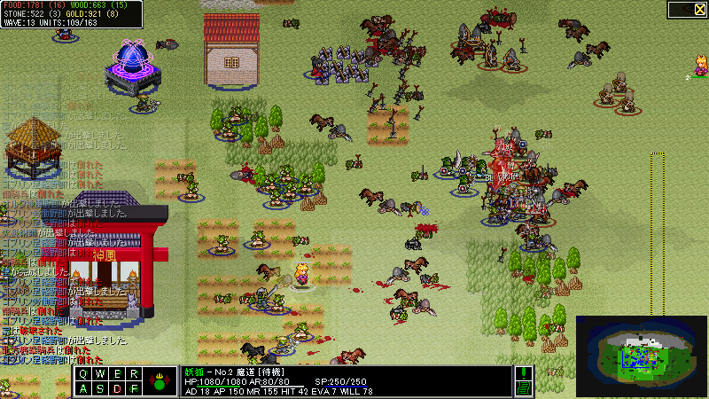
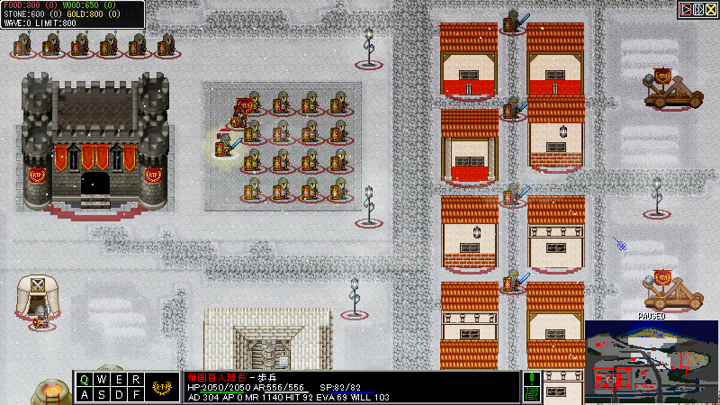
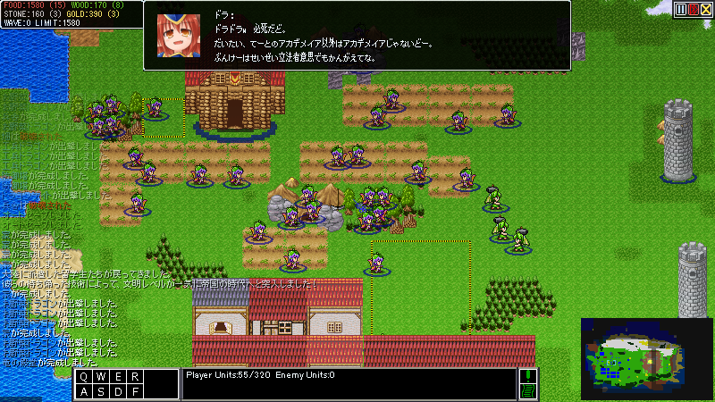
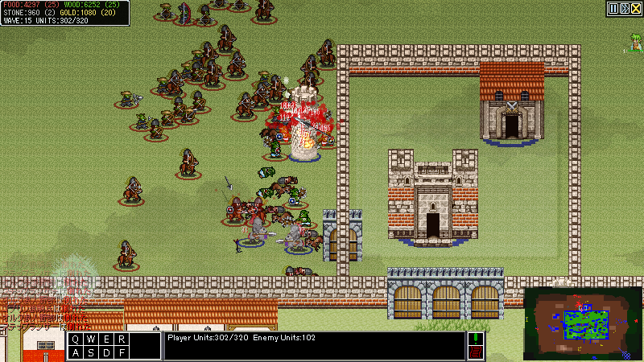
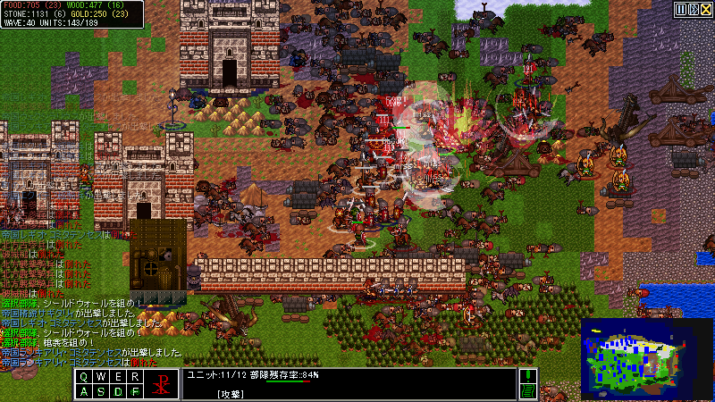
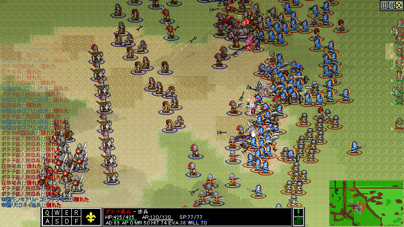
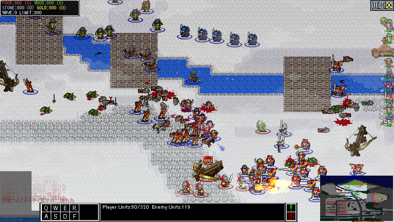

管理人コメント「なんだ!?光輝く気流のようなものが見える…!!変更追加点の行数の多さだけでごはんが進むぞ！」
エントリーNo18
[部分編集]
| 公開先：d18 | 感想掲示板 |
| タイトル | Doradora Island Saga: Legacy |
| 作者 | 安倍普三（本物) |
 |
ジャンル:RTS 使用ツール:Steam2003 |
| 紹介 | プレイ時間：?分 |
| IT'S ALMOST HARVESTING SEASON! | |
| 2019年に出したRTSのDefinitive Editionです 本来は続編を作ってたんですが、作者多忙で作業時間が取れなくなりました とりあえずリメイク版で許して… 21.12.30日提出完了 リアルライフの都合により、自分が長編作品で祭りに参加するのはもう当分ないと思われます。 （今後、本作に間に合わなかった要素のアップデートくらいはするかもしれませんが……） この場をお借りしまして、クラシック版に引き続き絵を使用させていただいたｓｓｚ様、並びにツクスレの皆様に感謝を申し上げます。 どうもありがとうございました。 22.1.19追記：祭り更新期間ほぼ終了につき、報告等は感想掲示板もしくはitchのバグ報告スレにお願いします | |
この作品は動画化/配信を許可しています
ストーリー
...
剣と魔法の時代さえまだ遠い、むかしむかしのお話です。
そのころ、大陸は偉大な「帝国」によって支配されていて、姿かたちの違う種族同士も憎み合うことなく、みな平和に暮らしていました。
帝国では市民権さえあれば、どんな種族であっても「ヒト」として平等に扱われていたのです。
そのころ、大陸は偉大な「帝国」によって支配されていて、姿かたちの違う種族同士も憎み合うことなく、みな平和に暮らしていました。
帝国では市民権さえあれば、どんな種族であっても「ヒト」として平等に扱われていたのです。
その中でも竜族は、太古の昔から空を往き、放浪の生活を送っている種族でした。
彼らのうち、頭の良い「ナスン」、手先の器用な「ドラコ」、力の強い「ドラナ」の三大氏族が次第にそれぞれ頭角を現すようになります。
竜族は、放浪生活の中で、互いに必要になったときだけ役割分担をして栄えてきたのです。
彼らのうち、頭の良い「ナスン」、手先の器用な「ドラコ」、力の強い「ドラナ」の三大氏族が次第にそれぞれ頭角を現すようになります。
竜族は、放浪生活の中で、互いに必要になったときだけ役割分担をして栄えてきたのです。
さて、そんな竜族にも、ついに定住の時がやってきました。
というのも、帝国が財政難から竜族の貯めこんでいる資産に目を付け、彼らに多額の領空通過税を要求するようになったのです。
帝国の目が行き届かない、北海の小さな無人島に定住の地を構えるべく、彼らは準備を整えます。
もちろん、入植のための開発には強力な指導者が必要となります。
そこで竜たちは、ナスン氏族の出身で帝国に留学していたこともある女性、「オトナス」に絶対的な権力を託しました。
竜族の運命は、いまや彼女の双翼にかかっています。
竜族と彼らの文明は、はたして時の試練に打ち勝つことができるのでしょうか……？
というのも、帝国が財政難から竜族の貯めこんでいる資産に目を付け、彼らに多額の領空通過税を要求するようになったのです。
帝国の目が行き届かない、北海の小さな無人島に定住の地を構えるべく、彼らは準備を整えます。
もちろん、入植のための開発には強力な指導者が必要となります。
そこで竜たちは、ナスン氏族の出身で帝国に留学していたこともある女性、「オトナス」に絶対的な権力を託しました。
竜族の運命は、いまや彼女の双翼にかかっています。
竜族と彼らの文明は、はたして時の試練に打ち勝つことができるのでしょうか……？
クラシック版からの主な変更点
...
- 解像度をワイドスクリーン対応に拡張
- ゲーム規模の拡大
- 最終更新でも手つかずのまま仕様扱いされていた各種バグ（ユニットがめりこむ・建設予定地が見えない等）の修正
- 操作性の向上および各種UIの改良
- ピクセル単位でのカメラスクロールに対応
- 各種処理の最適化
- 最適化に向け描画システムを一から再編
- ミニマップを抜本的に改良
- パーティクルエフェクト等、ビジュアル面の抜本的改良
- 斬首、頭蓋粉砕等のゴア表現を追加
- ステレオサウンド対応
- 戦闘システムの抜本的変更
- 上記に伴うバランスの全体的変更
- 畑張り直しの自動化
- 建築を終えた労働者が新たな建築現場を探すように変更
- 集団を移動させるとちゃんと移動先で横列隊形を組むように変更
- 町の中心からの仕事予約ができるように変更（むしろ何故できなかったのか？）
- 連続建築時、労働者が自動で次の現場に向かうように
- しょぼい経路探索の追加
- 竜族以外は壁/柵を張れるように
- マウス操作のみでセーブロード処理が完結するように
- オートセーブ機能追加
- 高度の概念を導入
- 設定資料等、おまけ要素はテキストファイルとして出力されるように
- 建築物の仕様変更
-「鉄工所」
従来とは異なり、あくまで研究でユニット能力を伸ばすようになりました。
竜族よりも人間の方が幅広い強化ができます。
また、オーラ効果として鉄工所の周囲のユニットの装甲を少しずつ回復する機能がつきました。
回復兵を随伴させて、使い捨てるには惜しい強めのユニットの装甲を合間に修理するのもまた一興でしょう。
-「砦」
今作の砦はオーラ効果を持ち、攻撃速度と移動速度、そして新たに導入されたスタミナ回復を下げるデバフを周囲の敵に与えます。
また、砦から放たれる攻撃も、スコーピオンと同じ強力な必中貫通弾になりました。
もはやあの「しょぼい矢をぺちぺち飛ばす機能もついた生産施設」ではないのです。
人間の勢力においてのほとんどのユニークテクノロジーは砦で研究されるため、生産施設としての重要度も上がっています。
-「防御塔」
こちらは攻撃面においてはあまり変化がありませんが、強化する手段が幾つか追加されました。
また、砦同様にオーラ効果を放ち周囲の敵の進撃を妨げます。
何より、視界システムが追加されたため、広い視界を持つ塔は前哨として重要になりました。
取りつかれないよう周りを壁で囲ってしまえば、簡易要塞としてかなり長い間敵を足止めしてくれることでしょう。
従来とは異なり、あくまで研究でユニット能力を伸ばすようになりました。
竜族よりも人間の方が幅広い強化ができます。
また、オーラ効果として鉄工所の周囲のユニットの装甲を少しずつ回復する機能がつきました。
回復兵を随伴させて、使い捨てるには惜しい強めのユニットの装甲を合間に修理するのもまた一興でしょう。
-「砦」
今作の砦はオーラ効果を持ち、攻撃速度と移動速度、そして新たに導入されたスタミナ回復を下げるデバフを周囲の敵に与えます。
また、砦から放たれる攻撃も、スコーピオンと同じ強力な必中貫通弾になりました。
もはやあの「しょぼい矢をぺちぺち飛ばす機能もついた生産施設」ではないのです。
人間の勢力においてのほとんどのユニークテクノロジーは砦で研究されるため、生産施設としての重要度も上がっています。
-「防御塔」
こちらは攻撃面においてはあまり変化がありませんが、強化する手段が幾つか追加されました。
また、砦同様にオーラ効果を放ち周囲の敵の進撃を妨げます。
何より、視界システムが追加されたため、広い視界を持つ塔は前哨として重要になりました。
取りつかれないよう周りを壁で囲ってしまえば、簡易要塞としてかなり長い間敵を足止めしてくれることでしょう。
- その他色々
追加コンテンツ(予定も含む)
...
- 新建築物の追加
「市場」
内政に関わる研究と資源調整ができるぞ。自動で金もちょっとだけ稼ぐぞ。
「厩舎」
騎兵が出るぞ。自動で食料も気づかない程度に生産するぞ。人間勢力専用。
「魔術祭壇」
魔法使いが出るぞ。敵に魔法を放つ防衛施設でもあるぞ。人間勢力専用。
「学問所」
建築が強くなる研究ができるぞ。建っているだけで少し研究速度を早めるぞ。人間勢力専用。
「見張り台」
視界を取る用の安い防御塔だぞ。
内政に関わる研究と資源調整ができるぞ。自動で金もちょっとだけ稼ぐぞ。
「厩舎」
騎兵が出るぞ。自動で食料も気づかない程度に生産するぞ。人間勢力専用。
「魔術祭壇」
魔法使いが出るぞ。敵に魔法を放つ防衛施設でもあるぞ。人間勢力専用。
「学問所」
建築が強くなる研究ができるぞ。建っているだけで少し研究速度を早めるぞ。人間勢力専用。
「見張り台」
視界を取る用の安い防御塔だぞ。
- 竜族にサブファクションを追加
従来の「天帝軍」に加えて
防衛型の「竜族ドラコ派」
攻撃型の「竜族ドラナ派」がプレイアブルになったぞ。
防衛型の「竜族ドラコ派」
攻撃型の「竜族ドラナ派」がプレイアブルになったぞ。
- 新規勢力追加
竜族とはそれぞれ全く異なるプレイスタイルで遊べるぞ。
竜族と違って家の数が人口上限に直結し、強い兵士を出すには軍事施設ごとにアップグレードが必要だぞ。
ため息が出るくらい弱いぞ。
プレイヤー用にマイルドになったノルド人だぞ。
装備の時代がおかしい上にごちゃ混ぜだぞ。
決して後期ローマ帝国ではないし決してラバルムでもないぞ。
竜族と違って家の数が人口上限に直結し、強い兵士を出すには軍事施設ごとにアップグレードが必要だぞ。
ため息が出るくらい弱いぞ。
プレイヤー用にマイルドになったノルド人だぞ。
装備の時代がおかしい上にごちゃ混ぜだぞ。
決して後期ローマ帝国ではないし決してラバルムでもないぞ。
- 新ステージ「クソデカアイランド」「アリーナ」
- 新ステージ「大陸」（予定）
- ボーナスミッション「クルシラ」追加
- 約8000字+約3000字のストーリー読み物を追加（実績解放で読めるようになります）
- 新勢力分の設定資料等、オマケコンテンツ拡充
各勢力性能諸元
...
万能文明

ヒトカスはちょっと石積むのが上手いからってチョーシに乗るなよ。
どんな取り繕っても所詮サルなんだから身の程わきまえてよね。
——あるドラゴン族、「ジュラ書紀」第一巻より
特徴（竜族共通）:
- 他勢力と異なる独自の技術ツリーを保有（旧版の仕様にいくつか技術が追加されたもの）
- 資源生産に向いたお野菜ドラゴンと建築・修理に特化した職人ドラゴンの二種類の労働者ユニットが使用可能
- ユニット数上限が家の数に依存しない
- 資源貯蓄可能量の上限が家の数に依存
- 壁と柵を張れない（ドラコ派を除く）
いいところ
家ミスでユニット生産が止まることがないしユニットパワーが凄い そして単純
わるいところ
一通り遊ぶだけだったらこいつら使って適当にクリアしといてね感が満載 そして単純
家ミスでユニット生産が止まることがないしユニットパワーが凄い そして単純
わるいところ
一通り遊ぶだけだったらこいつら使って適当にクリアしといてね感が満載 そして単純
勢力ボーナス：
- ナスン氏族の長
-竜族最強の近接戦闘ユニット「ドラゴナスカール」を砦で生産可能。
- 天駆ける自由の使者
-「ポテチ正規槍兵」と「ポテチ下馬騎士」を生産可能。
- 生産技術の独占
-お野菜ドラゴンの作業効率が8%増加。
- 闇よ、落ちるなかれ
-全ての研究コストを10%少なくする。
- 帝国市民法の継受者
-帝国の時代への移行コストが25%少ない。また、家の資源貯蔵量が最初から20増加する。
サブファクション二つはオマケなのでwikiでは割愛

ポテトン人、運命神モシモ―の子らよ！
わが弓兵隊と才覚ある魔術師たちを、大地を埋め尽くす戦士の盾と長槍で守り戦うのだ。
血と鉄と炎とだけが帝国による軛を断ち、我らの自由に冠を授けるのだから！
——族長ブライアルフ
いいところ
内政立ち上げが非常にやりやすく最終的に凄い量の兵が出る
わるいところ
よわい
勢力ボーナス：
- 畑の木材コスト-40%
- 町の中心の生産速度+8%
- 家の人口拡張数+2
- 時代進化により街の中心から女兵士が出撃可能
ユニークテクノロジー:
- 無秩序
-本来砦で生産できるユニット「ポテチハスカール」が兵舎からも生産可能になる
- パーフュージョン
-兵舎の作業速度+100%

歩兵型文明
ちょっとこいつらだけ元ネタそのまんますぎると思うんだけど
——氏名不詳、北方に遺された謎のルーン碑文より
いいところ
歩兵ゴリ押しが強い 内政も強い
わるいところ
なんか地味
勢力ボーナス：
- 食料生産効率+10%
- 攻城兵器コスト-15%
- 時代進化時に内政効率が上がる技術「荷車」を自動で研究
ユニークテクノロジー:
- 親衛隊
-強力な重騎兵「ドルジーナ護衛騎兵」が砦から生産可能になる
-ヒーローユニット「ルーリキア・ボガトィーリ」が砦から生産可能になる
-ヒーローユニット「ルーリキア・ボガトィーリ」が砦から生産可能になる
- カヴンの招集
-魔術祭壇の作業速度+33%
スシ・ウルス
騎兵型文明
緑色の益荒男たちよ！大破壊の惨禍を受けてなお、そのカタナは錆びついてはおらぬ！
名誉ある死を己が正鵠たらんとすは、グリーンスキン・ユミトリの誉ぞ！
ステップ騎兵は風を切り馬と共に征け、そして、わしらの憎悪が消えることもまたない。
死地に入るのも、「アルティピア帝国廃滅」がため……
——睡前、伝承による
いいところ
機動力がすごく高いし爆発する
わるいところ
全体的に脆いし爆発する

騎兵型文明
緑色の益荒男たちよ！大破壊の惨禍を受けてなお、そのカタナは錆びついてはおらぬ！
名誉ある死を己が正鵠たらんとすは、グリーンスキン・ユミトリの誉ぞ！
ステップ騎兵は風を切り馬と共に征け、そして、わしらの憎悪が消えることもまたない。
死地に入るのも、「アルティピア帝国廃滅」がため……
——睡前、伝承による
いいところ
機動力がすごく高いし爆発する
わるいところ
全体的に脆いし爆発する
勢力ボーナス：
- キ＝ヲキリマス
-畑以外の生産施設の木コスト-40%
- イクサ＝ジャ
-時代進化時に「徴用」（ユニット生産速度+33%）を自動で研究
-攻城兵器の移動速度+50%
-攻城兵器の移動速度+50%
- 痕
-防御塔が建築不可能
-全ての建物のHPが-12%
-全ての建物のHPが-12%
ユニークテクノロジー:
- 天空騎兵隊
-厩舎の生産速度+33%,騎兵の移動速度+8%
-本来砦で生産できるユニット「ステップ災厄騎兵」が厩舎からも生産可能になる
-本来砦で生産できるユニット「ステップ災厄騎兵」が厩舎からも生産可能になる
- ディヴァインウィンド
-歩兵の移動速度+8,加えて一部のユニットが死亡時爆発するようになる
防衛型文明

たとい、定命の者ら全てが消え失せるほどの時が経とうと、その遺産は我らが永遠に受け継ごう！
……されども、ただ傲慢と暴虐とだけを振りかざすのであれば、凡ての栄光はやがて崩れざるを得ないのだ。
——天帝オトナス、「ジュラ書紀」第二巻より
いいところ
理論上最強枠
わるいところ
理論上最強枠
勢力ボーナス：
- 千年帝国
-初めから時代進化完了済
-ゲーム開始時の全資源量にそれぞれ+100
-全ての建物のHPが+40%
-兵舎のアップグレード速度にボーナスを受ける
-視界を広げる研究が初めから完了している
-「見張り台」の代わりに低コストな「街灯」を建築可能
-ゲーム開始時の全資源量にそれぞれ+100
-全ての建物のHPが+40%
-兵舎のアップグレード速度にボーナスを受ける
-視界を広げる研究が初めから完了している
-「見張り台」の代わりに低コストな「街灯」を建築可能
- デカダンス
-ゲーム開始から12分後に労働者の資源収集効率-10%、24分後にさらに-10%（合計-20%）
-ゲーム開始から12分後に資源生産に特化した労働者「コロヌス・スケレトゥム」が生産可能になる
-資源効率改善研究が1段階しか行えない
-ゲーム開始から12分後に資源生産に特化した労働者「コロヌス・スケレトゥム」が生産可能になる
-資源効率改善研究が1段階しか行えない
ユニークテクノロジー:
- 機動野戦軍出動要請
-砦で非常に強力な歩兵、「帝国レギオ・コミタテンセス」、「帝国ランキアリィ・コミタテンセス」
及び旗持ちである「帝国ウェクシラリウス」の生産が可能になる
及び旗持ちである「帝国ウェクシラリウス」の生産が可能になる
- カタフラクト隊出撃要請
-最強の騎兵ユニット、「帝国カタフラクト」の生産が可能になる
- 魔導複合装甲
-「帝国カタフラクト」が全ての刺突被ダメージ（弓、槍、弩etc）を半減するようになる。
- 攻城工廠の再稼働
-より性能の高い攻城兵器、「帝国重スコルピオ」「帝国破城投石機」を運用可能にする
- 魔導通信
-全ユニットの視界をさらに+1する。
ゲーム画面SS等
...



追加の四勢力はそれぞれ固有のユニットで戦うぞ


更新履歴
...
21.12.30 v1.0公開
21.12.31 v1.0hotfix1（操作チュートリアルの進行不能バグ修正・残っていたテスト仕様削除・ナスン派の簡悔仕様削除）
21.12.31 v1.0hotfix2（実績周り・クラシックアイランドのバグ対策・PicID0指定のクラッシュ対策他）
22.1.1 v1.0hotfix3（PicID0指定のクラッシュ対策今度こそ・竜族労働者が働かなくなるバグの修正・アリーナが壊れてたのを修正他）
22.1.2 v1.0hotfix4（>>21氏の助力を得て今度こそ本当に絶対Pic0クラッシュを潰した・アリーナがま～だ壊れてたのも今度こそ修正、望むらくは年始最後のパッチであるように…）
22.1.5 v1.1 暫定安定版（バグ潰し・新ステージ「アリーナ」本実装）
22.1.7 v1.1fix1(天帝南征のマップが崩れていたのを修正・新実績で落ちるのを修正)
22.1.8 v1.11(天帝南征HARDをさらに簡単に・スシとポテチのバフ・バグ修正)
22.1.12 v1.12(クラシックアイランドの調整・ポテチに大幅なバフ等文明調整・細かいバグ修正)
22.1.15 v1.12hotfix1(ストーリーモードで落ちることがあるのだけ修正)
22.1.21 v1.13(HARDまでの難度を大幅に易化・細かなバグ取りと調整)
22.2.11 v1.131(細かい変更とバグ取り、操作周りの改良等)
22.2.13 v1.132(ほぼバグ取り)
22.2.19 v1.132fix(竜族「鎧の改良」にかかるバグの修正)
22.2.20 v1.133(ランダム生成の時落ちるバグを修正・設定資料の追加・紅白最終版！)
21.12.31 v1.0hotfix1（操作チュートリアルの進行不能バグ修正・残っていたテスト仕様削除・ナスン派の簡悔仕様削除）
21.12.31 v1.0hotfix2（実績周り・クラシックアイランドのバグ対策・PicID0指定のクラッシュ対策他）
22.1.1 v1.0hotfix3（PicID0指定のクラッシュ対策今度こそ・竜族労働者が働かなくなるバグの修正・アリーナが壊れてたのを修正他）
22.1.2 v1.0hotfix4（>>21氏の助力を得て今度こそ本当に絶対Pic0クラッシュを潰した・アリーナがま～だ壊れてたのも今度こそ修正、望むらくは年始最後のパッチであるように…）
22.1.5 v1.1 暫定安定版（バグ潰し・新ステージ「アリーナ」本実装）
22.1.7 v1.1fix1(天帝南征のマップが崩れていたのを修正・新実績で落ちるのを修正)
22.1.8 v1.11(天帝南征HARDをさらに簡単に・スシとポテチのバフ・バグ修正)
22.1.12 v1.12(クラシックアイランドの調整・ポテチに大幅なバフ等文明調整・細かいバグ修正)
22.1.15 v1.12hotfix1(ストーリーモードで落ちることがあるのだけ修正)
22.1.21 v1.13(HARDまでの難度を大幅に易化・細かなバグ取りと調整)
22.2.11 v1.131(細かい変更とバグ取り、操作周りの改良等)
22.2.13 v1.132(ほぼバグ取り)
22.2.19 v1.132fix(竜族「鎧の改良」にかかるバグの修正)
22.2.20 v1.133(ランダム生成の時落ちるバグを修正・設定資料の追加・紅白最終版！)
本作は No.31 風呂鳥に協賛しています（ほんまだよ）
いいねと思ったら押してください
最終更新：2025年04月28日 07:13
添付ファイル
- 211212_182129.png
- 211212_182302.png
- 211220_233610.png
- 211226_135905.png
- 211228_161045.png
- 211228_180210.png
- 211228_180651.png
- 211229_183655.png
- 211229_185247.png
- 211230_140555.png
- DIS_Legacy.png
- FF1xZYrVQAQ5XBU.png
- icon_final.png
- picon_11-export.png
- picon_11-export_fix.png
- picon_12-export.png
- picon_12-export_fix.png
- picon_3-export.png
- picon_8-export.png
- picon_8-export_fix.png
- picon_9-export.png
- picon_9.png